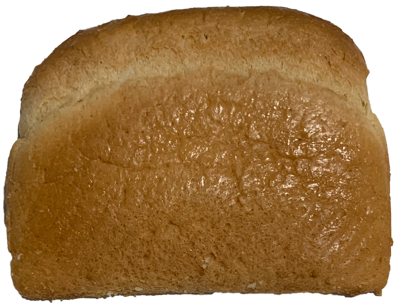
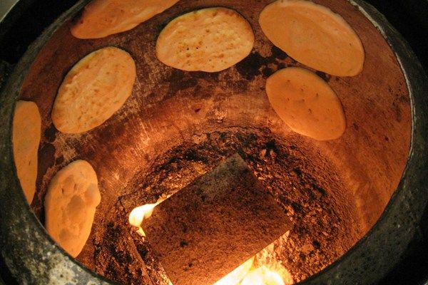
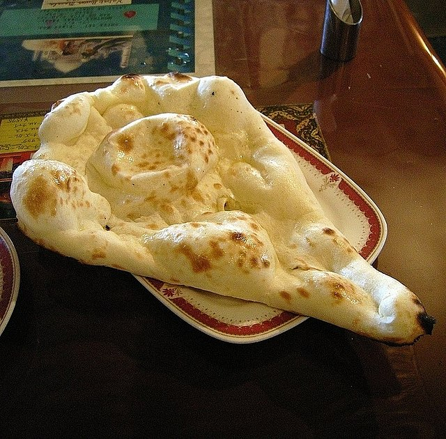

The Conquest of Pain
Pëtr Kropotkin
pain de mie
Food
chapter 5
part I



[ ]
« The Conquest of Bread (French: La Conquête du Pain; Russian: Хлѣбъ и воля, tr. Khleb i volja, "Bread and Freedom"; Хлеб и воля in contemporary spelling), also known colloquially as The Bread Book, is an 1892 book by the Russian anarcho-communist Peter Kropotkin. Originally written in French, it first appeared as a series of articles in the anarchist journal Le Révolté. It was first published in Paris with a preface by Élisée Reclus, who also suggested the title. Between 1892 and 1894, it was serialized in part in the London journal Freedom, of which Kropotkin was a co-founder.
In the work, Kropotkin points out what he considers to be the defects of the economic systems of feudalism and capitalism and why he believes they thrive on and maintain poverty and scarcity. He goes on to propose a more decentralized economic system based on mutual aid and voluntary cooperation, asserting that the tendencies for this kind of organization already exist, both in evolution and in human society.
The Conquest of Bread has become a classic of political anarchist literature. It was heavily influential on both the Spanish Civil War and the Occupy movement. » [Wikipedia] If the coming Revolution is to be a Social Revolution it will be distinguished from all former uprisings not only by its aim, but also by its methods. To attain a new end, new means are required.
The three great popular movements which we have seen in France during the last hundred years differ from each other in many ways, but they have one common feature.
In each case the people strove to overturn the old regime, and spent their heart’s blood for the cause.1
1. This is made evident today as structural racism is ingrained in the U.S. food system, as well as all other facets/sectors of the state. The United States continues to be a country in which the Black people and Indigenous people whom have built this country continue to be oppressed. [Structural racism in the American Food System, a brief primer.]
Then, after having borne the brunt of the battle, they sank again into obscurity. A Government, composed of men more or less honest, was formed and undertook to organize — the Republic in 1793, Labour in 1848, and the Free Commune in 1871.
Imbued with Jacobin ideas, this Government occupied itself first of all with political questions, such as the reorganization of the machinery of government, the purifying of the administration, the separation of Church and State, civic liberty, and such matters. 2
2. The USDA has chosen to continue perpetuate the racist oppression faced by Black farmers in a refusal to provide them with subsidies and loans.
It is true the workmen’s clubs kept an eye on the members of the new Government, and often imposed their ideas on them. But even in these clubs, whether the leaders belonged to the middle or to the working classes, it was always middle-class ideas which prevailed. They discussed various political questions at great length, but forgot to discuss the question of bread.3
3. Only 6.5% of managerial positions within the food system are held by Black workers while white workers hold 75%.[Bread on Earth]
Great ideas sprang up at such times, ideas that have moved the world; words were spoken which still stir our hearts, at the interval of a century.
But the people were starving in the slums.4
Here Kropotkin is speaking of basic human rights, and the right to food is a most basic essential need that should be provided. This can be directly linked to the U.S. food system and its failure to provide a majority of its entire population with adequate amounts of food, as well as food of substance [meaning it has significant nutritional value]. From the very commencement of the Revolution industry inevitably came to a stop — the circulation of produce was checked, and capital concealed itself. The master — the employer — had nothing to fear at such times, he battened on his dividends, if indeed he did not speculate on the wretchedness around; but the wage-earner was reduced to live from hand to mouth.5
5. In 2021 this same scene is depicted on the daily as homelessness is on the rise just as the the wealth of the 1% is on the rise.
Want knocked at the door.
Famine was abroad in the land — such famine as had hardly been seen under the old regime. “The Girondists are starving us!” was the cry in the workmen’s quarters in 1793, and thereupon the Girondists were guillotined, and full powers were given to “the Mountain” and to the Commune. The Commune indeed concerned itself with the question of bread, and made heroic efforts to feed Paris. At Lyons, Fouché and Collot d’Herbois established city granaries, but the sums spent on filling them were woefully insufficient. The town councils made great efforts to procure corn; the bakers who hoarded flour were hanged — and still the people lacked bread.
Then they turned on the royalist conspirators and laid the blame at their door. They guillotined a dozen or fifteen a day — servants and duchesses alike, especially servants, for the duchesses had gone to Coblentz. But if they had guillotined a hundred dukes and viscounts every day, it would have been equally hopeless.
The want only grew. For the wage-earner can not live without his wage, and the wage was not forthcoming. What difference could a thousand corpses more or less make to him?
Then the people began to grow weary. “So much for your vaunted Revolution! You are more wretched than ever before,” whispered the reactionary in the ears of the worker. And little by little the rich took courage, emerged from their hiding-places, and flaunted their luxury in the face of the starving multitude. They dressed up like scented fops and said to the workers: “Come, enough of this foolery! What have you gained by rebellion?”6
6. This is exactly what large corporations say when they are told that the solution cannot be found with capitalistic "ingenuity" and that their products cannot fix the issue. They think mainly as is essential to capitalism of the gains and not of thee exploitation required at every stage of that process.
Sick at heart, his patience at an end, the revolutionary had at last to admit to himself that the cause was lost once more. He retreated into his hovel and awaited the worst.
Then reaction proudly asserted itself, and accomplished a politic stroke. The Revolution dead, nothing remained but to trample its corpse under foot.
The White Terror began. Blood flowed like water, the guillotine was never idle, the prisons were crowded, while the pageant of rank and fashion resumed its old course, and went on as merrily as before.
This picture is typical of all our revolutions. In 1848 the workers of Paris placed “three months of starvation” at the service of the Republic, and then, having reached the limit of their powers, they made one last desperate effort — an effort which was drowned in blood.
In 1871 the Commune perished for lack of combatants. It had taken measures for the separation of Church and State, but it neglected, alas, until too late, to take measures for providing the people with bread. And so it came to pass in Paris that élégantes and fine gentlemen could spurn the confederates, and bid them go sell their lives for a miserable pittance, and leave their “betters” to feast at their ease in fashionable restaurants. At last the Commune saw its mistake, and opened communal kitchens. But it was too late. Its days were already numbered, and the troops of Versailles were on the ramparts.
“Bread, it is bread that the Revolution needs!”
Let others spend their time in issuing pompous proclamations, in decorating themselves lavishly with official gold lace, and in talking about political liberty!...
Be it ours to see, from the first day of the Revolution to the last, in all the provinces fighting for freedom, that there is not a single man who lacks bread, not a single woman compelled to stand with the weariful crowd outside the bake-house-door, that haply a coarse loaf may be thrown to her in charity, not a single child pining for want of food.7
7. In 2021 the issue is not the bread per se but the quality of said bread, the exploitation involved in its making, and even the wastefulness of its moldy end, because too much is produced. It has always been the middle-class idea to harangue about “great principles” — great lies rather!8
8. The goal is to assure people in regional communities with their own bread of quality, created by them, for them, in non-wasteful quantities. The idea of the people will be to provide bread for all. And while middle-class citizens, and workmen infested with middle-class ideas admire their own rhetoric in the “Talking Shops,” and “practical people” are engaged in endless discussions on forms of government, we, the “Utopian dreamers” — we shall have to consider the question of daily bread.
We have the temerity to declare that all have a right to bread, that there is bread enough for all, and that with this watchword of Bread for All the Revolution will triumph.
In the work, Kropotkin points out what he considers to be the defects of the economic systems of feudalism and capitalism and why he believes they thrive on and maintain poverty and scarcity. He goes on to propose a more decentralized economic system based on mutual aid and voluntary cooperation, asserting that the tendencies for this kind of organization already exist, both in evolution and in human society.
The Conquest of Bread has become a classic of political anarchist literature. It was heavily influential on both the Spanish Civil War and the Occupy movement. » [Wikipedia] If the coming Revolution is to be a Social Revolution it will be distinguished from all former uprisings not only by its aim, but also by its methods. To attain a new end, new means are required.
The three great popular movements which we have seen in France during the last hundred years differ from each other in many ways, but they have one common feature.
In each case the people strove to overturn the old regime, and spent their heart’s blood for the cause.1
1. This is made evident today as structural racism is ingrained in the U.S. food system, as well as all other facets/sectors of the state. The United States continues to be a country in which the Black people and Indigenous people whom have built this country continue to be oppressed. [Structural racism in the American Food System, a brief primer.]
Then, after having borne the brunt of the battle, they sank again into obscurity. A Government, composed of men more or less honest, was formed and undertook to organize — the Republic in 1793, Labour in 1848, and the Free Commune in 1871.
Imbued with Jacobin ideas, this Government occupied itself first of all with political questions, such as the reorganization of the machinery of government, the purifying of the administration, the separation of Church and State, civic liberty, and such matters. 2
2. The USDA has chosen to continue perpetuate the racist oppression faced by Black farmers in a refusal to provide them with subsidies and loans.
It is true the workmen’s clubs kept an eye on the members of the new Government, and often imposed their ideas on them. But even in these clubs, whether the leaders belonged to the middle or to the working classes, it was always middle-class ideas which prevailed. They discussed various political questions at great length, but forgot to discuss the question of bread.3
3. Only 6.5% of managerial positions within the food system are held by Black workers while white workers hold 75%.[Bread on Earth]
Great ideas sprang up at such times, ideas that have moved the world; words were spoken which still stir our hearts, at the interval of a century.
But the people were starving in the slums.4
Here Kropotkin is speaking of basic human rights, and the right to food is a most basic essential need that should be provided. This can be directly linked to the U.S. food system and its failure to provide a majority of its entire population with adequate amounts of food, as well as food of substance [meaning it has significant nutritional value]. From the very commencement of the Revolution industry inevitably came to a stop — the circulation of produce was checked, and capital concealed itself. The master — the employer — had nothing to fear at such times, he battened on his dividends, if indeed he did not speculate on the wretchedness around; but the wage-earner was reduced to live from hand to mouth.5
5. In 2021 this same scene is depicted on the daily as homelessness is on the rise just as the the wealth of the 1% is on the rise.
Want knocked at the door.
Famine was abroad in the land — such famine as had hardly been seen under the old regime. “The Girondists are starving us!” was the cry in the workmen’s quarters in 1793, and thereupon the Girondists were guillotined, and full powers were given to “the Mountain” and to the Commune. The Commune indeed concerned itself with the question of bread, and made heroic efforts to feed Paris. At Lyons, Fouché and Collot d’Herbois established city granaries, but the sums spent on filling them were woefully insufficient. The town councils made great efforts to procure corn; the bakers who hoarded flour were hanged — and still the people lacked bread.
Then they turned on the royalist conspirators and laid the blame at their door. They guillotined a dozen or fifteen a day — servants and duchesses alike, especially servants, for the duchesses had gone to Coblentz. But if they had guillotined a hundred dukes and viscounts every day, it would have been equally hopeless.
The want only grew. For the wage-earner can not live without his wage, and the wage was not forthcoming. What difference could a thousand corpses more or less make to him?
Then the people began to grow weary. “So much for your vaunted Revolution! You are more wretched than ever before,” whispered the reactionary in the ears of the worker. And little by little the rich took courage, emerged from their hiding-places, and flaunted their luxury in the face of the starving multitude. They dressed up like scented fops and said to the workers: “Come, enough of this foolery! What have you gained by rebellion?”6
6. This is exactly what large corporations say when they are told that the solution cannot be found with capitalistic "ingenuity" and that their products cannot fix the issue. They think mainly as is essential to capitalism of the gains and not of thee exploitation required at every stage of that process.
Sick at heart, his patience at an end, the revolutionary had at last to admit to himself that the cause was lost once more. He retreated into his hovel and awaited the worst.
Then reaction proudly asserted itself, and accomplished a politic stroke. The Revolution dead, nothing remained but to trample its corpse under foot.
The White Terror began. Blood flowed like water, the guillotine was never idle, the prisons were crowded, while the pageant of rank and fashion resumed its old course, and went on as merrily as before.
This picture is typical of all our revolutions. In 1848 the workers of Paris placed “three months of starvation” at the service of the Republic, and then, having reached the limit of their powers, they made one last desperate effort — an effort which was drowned in blood.
In 1871 the Commune perished for lack of combatants. It had taken measures for the separation of Church and State, but it neglected, alas, until too late, to take measures for providing the people with bread. And so it came to pass in Paris that élégantes and fine gentlemen could spurn the confederates, and bid them go sell their lives for a miserable pittance, and leave their “betters” to feast at their ease in fashionable restaurants. At last the Commune saw its mistake, and opened communal kitchens. But it was too late. Its days were already numbered, and the troops of Versailles were on the ramparts.
“Bread, it is bread that the Revolution needs!”
Let others spend their time in issuing pompous proclamations, in decorating themselves lavishly with official gold lace, and in talking about political liberty!...
Be it ours to see, from the first day of the Revolution to the last, in all the provinces fighting for freedom, that there is not a single man who lacks bread, not a single woman compelled to stand with the weariful crowd outside the bake-house-door, that haply a coarse loaf may be thrown to her in charity, not a single child pining for want of food.7
7. In 2021 the issue is not the bread per se but the quality of said bread, the exploitation involved in its making, and even the wastefulness of its moldy end, because too much is produced. It has always been the middle-class idea to harangue about “great principles” — great lies rather!8
8. The goal is to assure people in regional communities with their own bread of quality, created by them, for them, in non-wasteful quantities. The idea of the people will be to provide bread for all. And while middle-class citizens, and workmen infested with middle-class ideas admire their own rhetoric in the “Talking Shops,” and “practical people” are engaged in endless discussions on forms of government, we, the “Utopian dreamers” — we shall have to consider the question of daily bread.
We have the temerity to declare that all have a right to bread, that there is bread enough for all, and that with this watchword of Bread for All the Revolution will triumph.
mie de pain





metate-e-mano.jpg
The Metate e mano is a tool used in Mesoamerica to grind nixtamal. The tool itself lends a great deal of flavor to the corn. This contribution can only be attributed to the ingenuity and know how of the indigenous peoples of Mesoamerica.
tandoor-oven.png
Different tools produce different textures and it is important that those processes that derive from different geographical locations not be appropriated.
640px-naan_shiva.jpg
A nice bubbly Naan, a testament to those that grew it and baked it with the utmost care.
zeravshan-gorge.jpg
The community should use its own resources to create its own distinct bread, if each does then there would be enough to go around.
GatherJournal_W16_single_2-1536x1945.jpg
Contrary to what one might beleive, a dense bread is not a failed bread, it depends whether the ingredients are sh*t or not.
m-bottles.jpg
the structure of the crumb tells us this bread was make with dense flour full of nutrients, an indicator of a rich full bread.